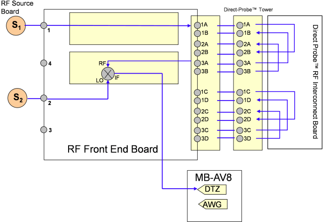

RF Direct docking test
The RF Direct Docking test verifies the cabling of the Direct-Probe solution. This test uses TV calibrations data.
During this test, a Stimulus signal is generated using a RF source card (Src). The signal is directed through a port to the Direct-Probe RF Interconnect Board and looped the receiver port. Measurements are performed using RF source card 2 as LO and digitizers of MCB as illustrated in the following figure. All available Ports will be tested during the Direct Docking Test. Default port numbers on Direct-Probe RF Interconnect Board are 48 ports. An upgrade to 96 ports is possible.
Examples
Description

Test results
In the example below, all 3G4 tests are failing. This means that this cable is defective or unconnected.
Status Stim Stim Stim Rcvr Rcvr Rcvr Freq Stim Meas Delta TLL Path Desc
Pin PathID Inst Pin PathID Inst (MHz) (dBm) (dBm) (dB) (dB)
PASS 3C4 1372 RFF319 1D4 2380 MCE232, module 7 1900 -10.00 -9.85 0.15 0.90 Direct
PASS 3C4 1372 RFF319 1D4 2380 MCE232, module 7 2400 -10.00 -9.66 0.34 0.90 Direct
PASS 3C4 1372 RFF319 1D4 2380 MCE232, module 7 3960 -10.00 -9.49 0.51 1.10 Direct
PASS 3C4 1372 RFF319 1D4 2380 MCE232, module 7 4900 -10.00 -9.74 0.26 1.10 Direct
PASS 3C4 1372 RFF319 1D4 2380 MCE232, module 7 5800 -10.00 -9.41 0.59 1.10 Direct
PASS 3C4 1372 RFF319 1D4 2380 MCE232, module 7 5900 -10.00 -9.28 0.72 1.10 Direct
*FAIL 3G4 1389 RFF319 1H4 2400 MCE232, module 7 50 -10.00 -75.00 -65.00 0.90 Direct
*FAIL 3G4 1389 RFF319 1H4 2400 MCE232, module 7 100 -10.00 -65.94 -55.94 0.90 Direct
*FAIL 3G4 1389 RFF319 1H4 2400 MCE232, module 7 250 -10.00 -57.39 -47.39 0.90 Direct
*FAIL 3G4 1389 RFF319 1H4 2400 MCE232, module 7 950 -10.00 -47.41 -37.41 0.90 Direct
*FAIL 3G4 1389 RFF319 1H4 2400 MCE232, module 7 1000 -10.00 -46.23 -36.23 0.90 Direct
*FAIL 3G4 1389 RFF319 1H4 2400 MCE232, module 7 1900 -10.00 -40.02 -30.02 0.90 Direct
*FAIL 3G4 1389 RFF319 1H4 2400 MCE232, module 7 2400 -10.00 -39.88 -29.88 0.90 Direct
*FAIL 3G4 1389 RFF319 1H4 2400 MCE232, module 7 3960 -10.00 -33.70 -23.70 1.10 Direct
*FAIL 3G4 1389 RFF319 1H4 2400 MCE232, module 7 4900 -10.00 -31.99 -21.99 1.10 Direct
*FAIL 3G4 1389 RFF319 1H4 2400 MCE232, module 7 5800 -10.00 -32.10 -22.10 1.10 Direct
*FAIL 3G4 1389 RFF319 1H4 2400 MCE232, module 7 5900 -10.00 -29.92 -19.92 1.10 Direct
PASS 3D4 1406 RFF319 2C4 2330 MCE232, module 7 50 -10.00 -9.46 0.54 0.90 Direct
PASS 3D4 1406 RFF319 2C4 2330 MCE232, module 7 100 -10.00 -9.51 0.49 0.90 DirectFunctional changes
- Introduced in SmarTest 7.1.4